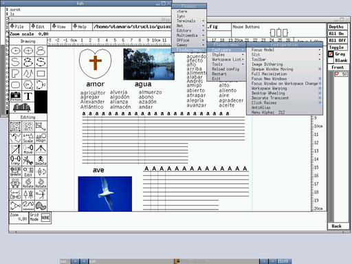
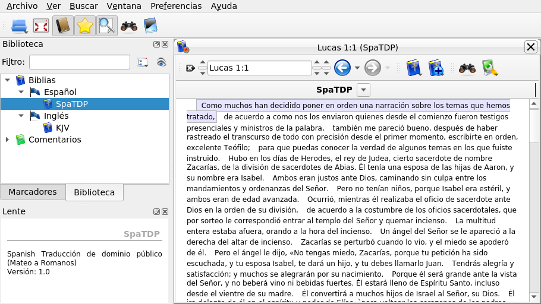
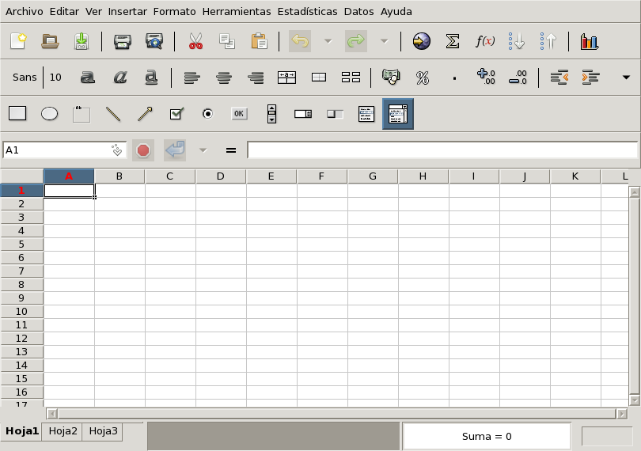
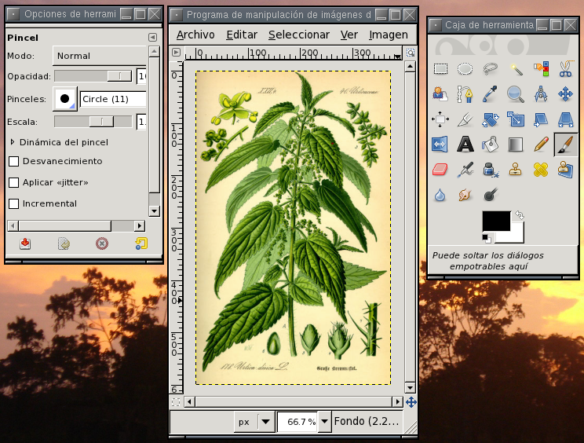
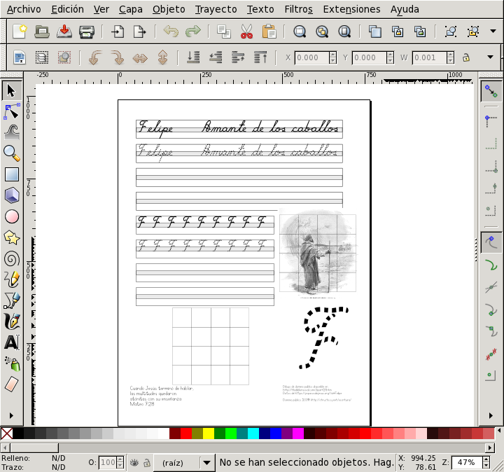
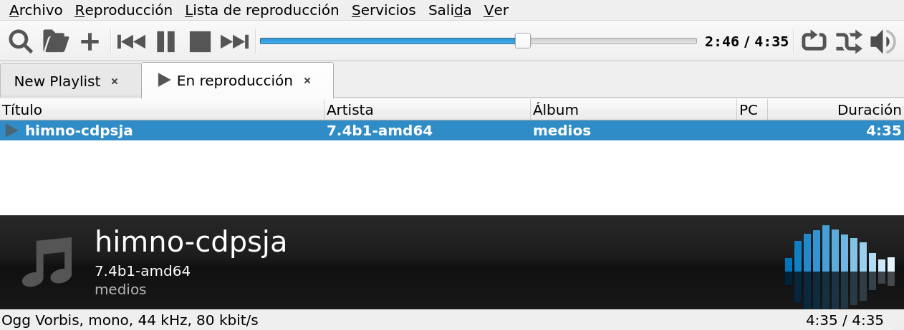
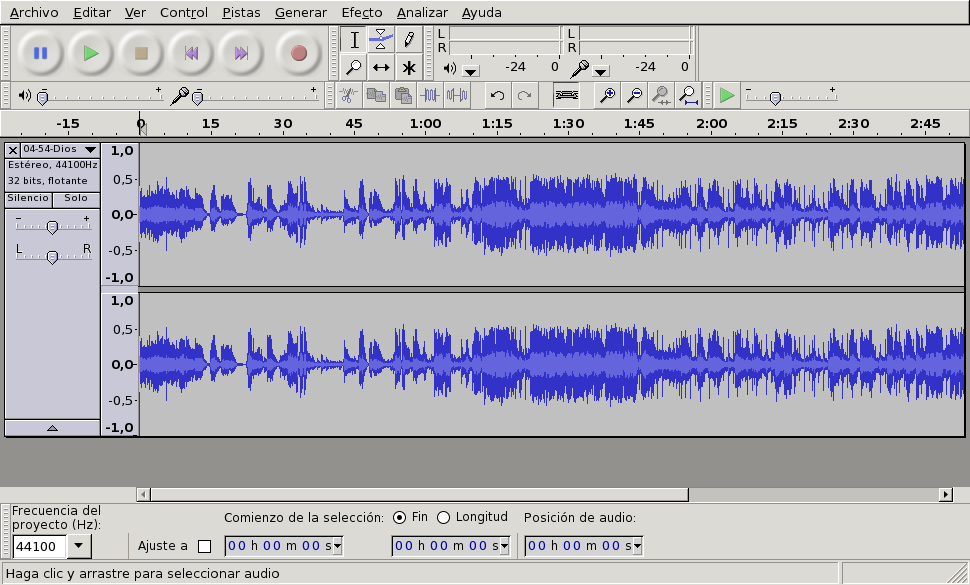

La operación básica de este liviano y estético administrador de ventanas se describe en basico_adJ, aquí describimos algunos detalles de configuración.
Para emplearlo como administrador de ventanas por defecto debe
modificarse ~/.xsession, así como en
~/.xinitrc y agregar al final:
if (test -x /usr/local/bin/startfluxbox) then {
/usr/local/bin/startfluxbox
} fi;
Una vez en operación podrá realizar diversas configuraciones
oprimiendo el botón derecho sobre el escritorio en el menú
fluxbox menu. Por ejemplo podrá cambiar
estilos en System Styles y esconder/mostrar
la barra de herramientas con
Configure -> Toolbar -> Visible FluxBox

Entre sus características:
Es altamente configurable (recursos, menús, decoración de ventanas y estilos).
Es muy liviano, requiere alrededor de 4MB en RAM.
Con Alt+[Botón izquierdo] permite cambiar ubicación de la ventana sobre la que está el curso, y con Alt+[Botón derecho] el tamaño.
El menú que presenta se configura en un archivo texto con
una sintaxis sencilla, puede cambiarse editando en
~/.fluxbox/menu.
Los programas que se inician con el escritorio pueden
configurarse en ~/.fluxbox/startup. Por
ejemplo en este archivo puede configurar el locale que usará
agregando o cambiando la línea:
export LANG=es_CO.UTF-8
La apariencia en general puede configurarse en
~/.fluxbox/init
Puede configurar teclas rápidas en el archivo
~/.fluxbox/keys
Sitio oficial fluxbox.org.
Página sobre fluxbox de NetBSD http://wiki.netbsd.org/fluxbox/
Página sobre fluxbox de Gentoo http://www.gentoo.org/doc/es/fluxbox-config.xml
La operación básica se describe en basico_adJ, aquí describimos algunos detalles de configuración.
El archivo de configuración se ubica en
~/.config/xfe/xferc. La mayoría de
posibilidades se configuran desde Editar > Preferencias, sin
embargo para que opere bien Herramientas > Ventana
superusuario nueva en adJ el archivo de configuración en la
sección OPTIONS debe incluir:
uso_sudo=1 sudo_nopasswd=1
Como se describe en el manual de BibeTime, es una herramienta de estudio bíblico con soporte para diferente tipos de textos e idiomas. Usa la librería SWORD que da acceso a más de 200 documentos en 50 idiomas de la Sociedad bíblica Crosswire.

Puede iniciarla desde el menu de fluxbox
Espiritualidad->bibletime o desde una terminal con
bibletime. Deben instalarse obras primero.
Cada obra puede ser una traducción, comentario, diccionario. Hay
traducciones a muchos idiomas (incluyendo manuscritos griegos y
hebreo). En español entre otras se encuentra parte de la
traducción de dominio público de los evangelios que típicamente
se ha incluido con adJ.
Instale obras desde Preferencias->Administrador de Biblioteca.
Una vez instale los módulos que desea usar, es posible ver varias traducciones en paralelo. Cada traducción puede contar con opciones como: Palabras de Cristo en Rojo, Mostrar cabeceras, Mostrar notas al pie.
De manera predeterminada incluye la versión KJV de la biblia en inglés y su marcado Strong. Cuando estudia un pasaje pasa el curso sobre una palabra en la ventana “Lente” verá el marcado Strong.
LibreOffice es un juego de aplicaciones de oficina que ofrece, prácticamente, la misma funcionalidad de MS-Office, un formato de documentos estándar (ISO) y facilidades para importar y exportar en formatos de MS-Office.

Lo puede iniciar desde el escritorio con botón derecho Oficina > LibreOffice o bien desde una terminal con
soffice
Después de instalarlo y ejecutarlo por primera vez arrancará en inglés, para configurarlo en español vaya al menú Tools > Options > Language y elija Español y Español/Colombia en las casillas de idioma que aparecen al lado derecho.
Incluye el procesador de texto writer (que
puede iniciar desde una terminal con
swriter), la hoja de cálculo
calc (que inicia desde una terminal con
scalc), el creador de presentaciones
impress (que inicia con
simpress desde un terminal) y el programa
para diagrama draw (que puede iniciar con
sdraw). Puede aprender más sobre este
procesador en
libreoffice-basico
Para operar con hojas de cálculo incluye gnumeric-1.12.59p1, que también puede abrir y guardar en OpenDocument y en formatos de Microsoft Office.
La funcionalidad de un procesador de palabra, así como la básica
para hacer presentaciones también las ofrece LaTeX (ver
Sección 6.3.2.1, “LaTeX”). Parte de la funcionalidad de
una hoja de cálculo la tiene desde una terminal
sc. También puede usar
magicpoint para hacer presentaciones. Sin
embargo para usar estas herramientas se requiere aprender formas
diferentes de operar.
Para emplear TeX, LaTeX y asociados instale texlive y gv:
doas pkg_add $PKG_PATH/&p-texlive_base;.tgz
doas pkg_add $PKG_PATH/&p-texlive_texmf-full;.tgz
doas pkg_add $PKG_PATH/gv-3.7.4p0.tgz
Puede configurar tamaño del papel, separado en sílabas y otros
detalles con texconfig.
A continuación se incluye un mini-tutorial de LaTeX adaptado de
AALinux, por otra parte puede consultar algo más sobre
gv en la sección
Sección 7.8.1, “Uso de una impresora ya configurada”.
LaTeX es una extensión a un sistema llamado TeX, desarrollado para escribir documentos de matemáticas. A continuación se presenta un ejemplo de un documento LaTeX y el resultado que se obtiene tras procesarlo.
\documentclass{article}
\usepackage[T1]{fontenc}
\usepackage[spanish]{babel}
\begin{document}
\author{Rupertino Gonzales}
\title{Algunas posibilidades de LaTeX}
\maketitle
\section{Elementos}
Puede estructurar el documento en capítulos, secciones, etc.
Este texto es el contenido de la primera sección de este ejemplo,
puede escribir cada párrafo en líneas consecutivas.
\subsection{Ayudas}
Puede lograr efectos como \emph{Itálicas}, \textbf{negrillas} o
cambios en el \textsf{tipo o {\small tamaño} de letra} (note
como se anidaron ambientes en este ejemplo).
Puede crear listas:
\begin{itemize}
\item Primer elemento de lista.
\item Segundo elemento de lista.
\end{itemize}
o tablas
\\
\begin{tabular}{|l|r|} \hline
Título 1 & Título 2 \\\hline
elemento 1 & elemento 2 \\\hline
\end{tabular}
\subsection{Ecuaciones}
LaTeX es un experto en esta materia:
\[ \int_{x=-\infty}^{\infty}e^{-|x|} \]
\end{document}
LaTeX ofrece plantillas para varios tipos de documentos:
artículo, reporte, libro y ofrece el concepto de ambiente para
indicar como presentar cierta información de acuerdo a la
plantilla. En el ejemplo presentado, el tipo de documento es
artículo (lo indica la línea
documentclass{article}), y uno de los
ambientes empleados es tabular, que genera
una tabla.
Una vez edite un documento puede procesarlo con LaTeX para
obtener un archivo DVI, por ejemplo para generar el archivo
documento.dvi a partir de
documento.tex:
latex documento.tex
latex Programa que convierte un archivo LaTeX a DVI.
xdvi Programa para ver un archivo DVI en pantalla.
El archivo DVI es apropiado para imprimir, puede imprimirlo
con una orden como dvilj,
dvidj o un nombre análogo que corresponda a
su impresora [9]. Para visualizar un archivo DVI puede emplear la
orden xdvi:
xdvi documento.dvi
dvi2ps Programa para convertir un DVI en PostScript.
y para convertirlo a PostScript puede emplear
dvi2ps:
dvi2ps -c documento.ps documento.dvi
A continuación se presenta como se ve el ejemplo de esta
sección con el programa xdvi.
Existen además otros programas para convertir de LaTeX a HTML como latex2html y HeVeA. Puede encontrar más información de latex2html en http://ctan.tug.org/ctan/tex-archive/support/latex2html/ y de HeVeA en http://pauillac.inria.fr/hevea/.
Puede configurarse tanto DocBook SGML 4.4 y procesarse con las
hojas de estilo DSSSL, o bien DocBook XML 4.4 y procesarse con
xsltproc.
Instale los paquetes openjade, docbook y docbook-dsssl:
doas pkg_add $PKG_PATH/docbook-4.5p4.tgz
doas pkg_add $PKG_PATH/docbook-dsssl-1.79p0.tgz
doas pkg_add $PKG_PATH/openjade-1.3.3pre1p10.tgz
Esto bastará para hacer conversiones de DocBook SGML a HTML por ejemplo si su hoja de estilo DSSL es “marcos.dsl” y va a convertir el documento DocBook marcos.xml:
openjade -t sgml -ihtml -d marcos.dsl#html marcos.xml
Para convertir a PostScript además de los paquetes anteriores requiere el paquete texlive (ver TeX y Ghostview) y el paquete jadetex
Como parte del paquete
`se instalará el DTD de DocBook XML 4.4 en el directorio/usr/local/share/xml/docbook. Es recomendable que cree el archivo/usr/local/share/xml/catalog`
inicialmente con:
CATALOG "docbook/catalog"
y que agregue en este archivo la ruta de otros catálogos XML o de DTDs.
Para transformar documentos XML con hojas de estilo XSL puede
emplear un procesador como xsltproc, que
está incluido en el paquete libxslt. Esta
herramienta recibe el nombre del archivo XSL y el nombre del
archivo XML por transformar. También puede recibir la opción
--catalogs que indica usar los catálogos de
la variable SGML_CATALOG_FILES (se separan
unos catálogos de otros con el carácter “:”), o
la opción --nonet que indica no descargar
DTDs de Internet (los catálogos deben resolver todos los
identificadores públicos).
Las hojas de estilo XSL para transformar DocBook XML en HTML y
en XML-FO (Formatting objects, apropiado para imprimir con un
procesador FO) se instalan con el paquete
`y quedan en/usr/local/share/xsl/docbook`.
Una vez instalados todas las partes puede procesar el archivo
ejemplo.xdbk:
<?xml version="1.0" encoding="UTF-8"?>
<!DOCTYPE article PUBLIC "-//OASIS//DTD DocBook XML V4.1.2//EN" "/usr/local/share/xml/docbook/4.4/docbookx.dtd" >
<article lang="es">
<title>articulo</title>
<articleinfo>
<authorgroup>
<author>
<firstname>Nombres</firstname>
<surname>Apellidos</surname>
<authorblurb>
<para><address>
<email>micorreo@pasosdeJesus.org</email>
</address></para>
</authorblurb>
</author>
</authorgroup>
<abstract>
<para>Resumen</para>
</abstract>
<legalnotice>
<para>nota legal</para>
</legalnotice>
</articleinfo>
<sect1 id="s1">
<title>Primera sección</title>
<para>Parrafo</para>
</sect1>
</article>
con una hoja XSLT de DocBook con:
export SGML_CATALOG_FILES="/usr/local/share/xml/catalog"
xsltproc --catalogs --nonet /usr/local/share/xsl/docbook/html/chunk.xsl ejemplo.xdbk
aspell permite revisar ortografía de textos
planos o fuentes de documentos en diversos formatos (HTML, XML o
TeX). Hay diccionarios disponibles para diversos idiomas. Al
instalar el paquete aspell se instalará el
diccionario en inglés. Para emplear el diccionario en español
instale el paquete aspell-es.
Puede corregir interactivamente la ortografía de un texto
plano (digamos letter.txt) usando el
diccionario por defecto (inglés) con:
aspell -c letter.txt
o si desea emplear el diccionario en español para revisar
carta.txt:
aspell -d spanish -c carta.txt
Al corregir interactivamente aspell
mostrará palabras que no encuentre en el diccionario del
idioma ni en su diccionario personal[10] del idioma, así como posibles reemplazos. Podrá
elegir uno de los reemplazos tecleando el número (o letra) que
antecede al reemplazo.
mplayer es un reproductor de audio y vídeo
que soporta gran variedad de formatos. Por ejemplo para ver
video.flv:
mplayer video.flv
Se distribuye con codecs de código abierto y de calidad para muchos formatos.
También permite hacer conversiones y extraer partes. Por ejemplo para extraer pista de audio de un video descargado de youtube, y dejarla en formato WAV:
mplayer -vo null -ao "pcm:file=pista.wav" -af resample=44100 "video.flv"
Para reproducir 10 segundos de un DVD comenzando en el segundo 240:
mplayer -ss 240 -endpos 10 dvd://1
Se distribuye junto con mencoder que
permite convertir de un formato a otro.
Si requiere una interfaz gráfica de usuario (GUI) puede
instalar bien el paquete smplayer o bien
gnome-player.
Para ver un directorio con imágenes puede usar
xfi incluido en el paquete xfe-1.46.2p1:
xfi migrafica.png
Las operaciones típicas con gráficos son el retoque de fotos y la creación de diagramas. Para retocar fotografías se emplean editores gráficos a nivel de pixels, mientras que para creación de diagramas resultan más convenientes editores de gráficos vectoriales.
Como editor de gráficos a nivel de pixels, el CD de adJ incluye gimp-3.0.4p0

Como editor vectorial incluye inkscape-1.4.2p1

OpenOffice incluye otro editor vectorial llamado
draw.
Para la generación de gráficos de barras y estadísticos resulta más apropiado el graficador de gnumeric-1.12.59p1 o de calc –la hoja de cálculo de OpenOffice–, ver Sección 6.3.1, “Aplicaciones estilo MS-Office”
El paquete ImageMagick-6.9.13.26p0 incluye varios programas que le permiten ver una imagen, información de la misma, hacer algunas operaciones o convertir de un formato a otro.
Para ver una gráfica (sin editarla) prácticamente en cualquier
formato, puede usar display
display migrafica.png
Para ver información de una imágen use:
identify migrafica.png
Para convertir de un formato a otro (y opcionalmente hacerle transformaciones) use:
convert migrafica.png migrafica.jpg
Para capturar una ventana o una porción rectangular puede usar
import pantallazo.png
y elegir una ventana o marcar el rectángulo por capturar.
Para reproducir una pista de audio en diversos formatos
(incluyendo el libre ogg, el común wav y el patentado mp3) puede
usar mplayer (ver
Sección 6.5.1.1, “mplayer”), o bien
audacious (incluido en el paquete
audacious-4.5.1):

El programa play incluido en el paquete
sox-14.4.4p3 también le permitirá escuchar diversos formatos.
Desde la línea de órdenes podrá recortar, cambiar volumen y
aplicar otros efectos empleando el programa
sox.
Si prefiere un editor gráfico que le permite recortar y aplicar algunos efectos a pistas de audio en prácticamente cualquier formato de audio utilice el programa audacity-3.7.5p0:

ffmpeg es un conversor rápido para audio y video que puede capturar de fuentes de audio/vide en vivo.
Puede leer de muchos archivos/fuentes y escribir en muchos archivos/destinos, cada fuente puede constar de varios streams de diversos tipos.
En la línea de ordenes -i indica una entrada
y -o una salida, cada -i o
-o puede predecerse de opciones para la
respectiva entrada o salida. El siguiente ejemplo tomado del
manual (disponible con el paquete) establece la tasa de bits del
archivo de salida a 64 kbit/s:
ffmpeg -i input.avi -b:v 64k -bufsize 64k output.avi
El uso básico de mutt puede consultarlo en basico_adJ
Para enviar correos mutt corre por defecto
el programa sendmail (por defecto con
parámetros: sendmail -oem -oi), si usted
prefiere o necesita emplear el sendmail de
otro computador puede:
Hacer un script (digamos
/home/pablo/scripts/envia.sh)
que llame al sendmail remoto (por
ejemplo con ssh) y le pase lo que
recibe por entrada estándar:
#!/bin/sh
# envia.sh Dominio público
if (test "$SSH_AUTH_SOCK" = "") then {
echo "Usar con ssh-agent";
exit 2;
} fi;
cat - | ssh pablo@amor.miescuela.edu.co /usr/sbin/sendmail -oem -oi
Note que este script está hecho para ser ejecutado junto con el agente de autenticación de ssh (i.e `ssh-agent`).
Configure mutt para que emplee su
script con la variable sendmail, la
cual puede establecer en su archivo
~/.muttrc con algo como:
set sendmail=/home/pablo/scripts/envia.sh
Asegúrese de ejecutar mutt junto con el
agente de autenticación de ssh. Por
ejemplo con:
ssh-agent /bin/ksh
ssh-add
mutt
o si emplea XWindow es posible que pueda configurar su manejador de escritorio o su administrador de ventanas para que toda la sesión emplee el agente (ver un ejemplo en [xref](#fluxbox)).
Página man de mutt
Sección sobre mutt de
basico_adJ
Puede iniciarlo desde el menú de fluxbox o desde una terminal
con chromium.
Es posible que chrome use como proxy un tunel SOCKS creado con ssh. Esto es útil por ejemplo para ingresar a sitios web que están en intranets. Primero cree el tunel ingresando al cortafuegos/enrutador de la Intranet, por ejemplo en el puerto 9080 con:
ssh -D9080 miusuario@micortafuegos
A continuación inicie chromium indicando que debe usarse el proxy socks del puerto 9080:
chromium --proxy-server=socks://127.0.0.1:9080
Tras esto ya podrá ingresar direcciones de la intranet desde el navegador.
En adJ 7.8 es sencillo usar ruby-3.4.9 con Ruby on Rails 7. Lo básico se instala de paquetes de OpenBSD y lo más reciente de Ruby directamente como gemas.
Asegúrese de tener instalados los paquetes ruby-3.4.9 y node-22.20.0v0, incluidos en el instalador de adJ 7.8
Asegúrese de tener enlaces al intérprete de ruby y herramientas (como describe el paquete ruby):
doas sh
ln -sf /usr/local/bin/ruby34 /usr/local/bin/ruby
ln -sf /usr/local/bin/bundle34 /usr/local/bin/bundle
ln -sf /usr/local/bin/bundler34 /usr/local/bin/bundler
ln -sf /usr/local/bin/erb34 /usr/local/bin/erb
ln -sf /usr/local/bin/gem34 /usr/local/bin/gem
ln -sf /usr/local/bin/irb34 /usr/local/bin/irb
ln -sf /usr/local/bin/racc34 /usr/local/bin/racc
ln -sf /usr/local/bin/rake34 /usr/local/bin/rake
ln -sf /usr/local/bin/rbs34 /usr/local/bin/rbs
ln -sf /usr/local/bin/rdbg34 /usr/local/bin/rdbg
ln -sf /usr/local/bin/rdoc34 /usr/local/bin/rdoc
ln -sf /usr/local/bin/ri34 /usr/local/bin/ri
ln -sf /usr/local/bin/typeprof34 /usr/local/bin/typeprof
Asegurarse de tener limites amplios del sistema operativo
para abrir archivos y manejar memoria, por ejemplo
superiores a los siguientes en
/etc/systctl.conf
kern.shminfo.shmmni=1024
kern.seminfo.semmns=2048
kern.shminfo.shmmax=50331648
kern.shminfo.shmall=51200
kern.maxfiles=20000
El usuario desde el cual desarrollará o ejecutará
aplicaciones también debe tener límites amplios, en
particular su clase de login (por ejemplo
staff). Debe tener al menos los
siguientes en /etc/login.conf
staff:\
:datasize-cur=1536M:\
:datasize-max=infinity:\
:maxproc-max=4096:\
:maxproc-cur=4096:\
:openfiles-max=8090:\
:openfiles-cur=8090:\
:ignorenologin:\
:requirehome@:\
:tc=default:
(Si modifica el archivo /etc/login.conf
debe reconstruir su versión binaria con
doas cap_mkdb /etc/login.conf).
Para facilitar su exploración del lenguaje ruby, puede usar
irb (ver {4}), pero antes verifique que
su archivo ~/.irbrc tenga las siguientes
líneas (añadidas por defecto en adJ a la cuenta de
administrador):
# Configuración de irb
# Basado en archivo de órdenes disponible en <http://girliemangalo.wordpress.com/2009/02/20/using-irbrc-file-to-configure-your-irb/>
require 'irb/completion'
require 'pp'
IRB.conf[:AUTO_INDENT] = true
IRB.conf[:USE_READLINE] = true
def clear
system('clear')
end
A continuación ingrese a irb y escriba
por ejemplo 4. y presione la tecla [Tab]
2 veces para ver los métodos de la clase Integer.
El paquete ruby incluye
rubygems que maneja gemas (es decir
librerías) con el programa gem.
El directorio donde se instalan las gemas globales es
/usr/local/lib/ruby/gems/3.4/
donde sólo pueden instalarse con doas.
Recomendamos iniciar un directorio para instalar gemas como
usuario normal en
/var/www/bundler/ruby/3.4,
por 3 razones (1) evitar riesgos de seguridad al instalar
gemas como root, (2) evitar problemas de permisos y la
dificultad de programas como bundler para usar
doas en lugar de sudo
y (3) alistar infraestructura para que sus aplicaciones
corran en una jaula chroot en /var/www
Prepare ese directorio con:
doas mkdir -p /var/www/bundler/ruby/3.4/
doas chown -R $USER:www /var/www/bundler
Y cuando requiera instalar una gema allí emplee:
gem install --install-dir /var/www/bundler/ruby/3.4/ json
O si llega a tener problemas de permisos con:
doas gem install --install-dir /var/www/bundler/ruby/3.4/ bcrypt
Para facilitar compilación de algunas extensiones (como las
de nokogiri) se recomienda instalar
pkg-config globalmente:
doas gem install pkg-config
Para facilitar el manejo de varias gemas (y sus
interdependencias) en un proyecto es típico emplear
bundler que instala con:
doas gem install bundler
if (test -x /usr/local/bin/bundle34) then {
doas ln -sf /usr/local/bin/bundle34 /usr/local/bin/bundle;
} fi
Configúrelo para que instale gemas localmente en
/var/www/bundler/ruby/3.4
con:
bundle config path /var/www/bundler/
Esto creará el directorio ~/.bundler/ y
dentro de este el archivo ~/bundle/config
con el siguiente contenido:
--- BUNDLE_PATH: "/var/www/bundler/"
Puede experimentar descargando un proyecto para ruby ya
hecho, seguramente verá un archivo
Gemfile, donde bundler
examina de que librerías depende la aplicación y genera un
archivo Gemfile.lock con las versiones
precisas por instalar de cada gema.
Una vez tenga un proyecto asegure que este emplea las gemas
de /var/www/bundler/ruby/3.4
ejecutando dentro del directorio del proyecto:
mkdir .bundle
cat > .bundle/config <<EOF
---
BUNDLE_PATH: "/var/www/bundler"
BUNDLE_DISABLE_SHARED_GEMS: "true"
EOF
E instale con
bundle install
Si eventualmente no logra instalar algunas –por problemas de permisos típicamente– puede instalar con
doas gem install --install-dir /var/www/bundler/ruby/3.4 json
Cuando actualice la versión del sistema operativo al igual que con gemas es importante reinstalar las gemas de las que depende una aplicación –necesariamente las que tengan extensiones en C. Esto es sencillo con versiones de bundler posteriores a la 1.15.4:
bundle pristine
y después instalando una a una las gemas que sean extensiones, por ejemplo
doas gem install --install-dir /var/www/bundler/ruby/3.4 nokogiri -v '2.0'
Se trata de una popular gema que facilita mucho la creación de sitios dinámicos.
Para instalarla globalmente (en
/usr/local/bin y
/usr/local/lib/ruby/gems/) la versión
estable más reciente de Rails ejecute
doas gem install rails
Rails requiere en el servidor un intérprete de JavaScript,
por lo que recomendamos node.js (ver {1})
incluido en adJ 7.8 y que se configurará
automáticamente.
La gran mayoría de gemas usadas por rails instalarán de la misma forma que se explicó. Algunos casos especiales son:
nokogiri que puede requerir
doas gem install --install-dir /var/www/bundler/ruby/3.4/ nokogiri -- --use-system-libraries
capybara-webkit que podría requerir
QMAKE=qmake-qt5 MAKE=gmake doas gem install capybara-webkit
Las aplicaciones Ruby on Rails posteriores a 6.0 requieren el manejador de paquetes Javascript yarn. Lo puede instalar con:
doas npm install -g yarn
Si durante la ejecución de yarn ve fallas del estilo:
/tmp/yarn--1602506143839-0.91595986516731/node[3]: /tmp/yarn--1602506143839-0.91595986516731/../node: not found
se recomienda enlazar el binario de node en /tmp:
doas ln -s /usr/local/bin/node /tmp/
Para emplear vim como editor se
recomienda asegurarse de haber ejecutado:
cd ~
mkdir -p .vim
cd .vim
cp -rf /usr/local/share/vim/vim91/* .
y si no tiene archivo ~/.vimrc ejecutar:
cp /usr/local/share/vim/vim91/vimrc_example.vim ~/.vimrc
así como agregar el archivo
~/.vim/ftplugin/ruby.vim las siguientes
líneas:
setlocal shiftwidth=2
setlocal tabstop=2
set expandtab
Para aprender lo básico de Ruby puede comenzar con el tutorial en español disponible en http://rubytutorial.wikidot.com/
Puede aprender por ejemplo con los tutoriales interactivos de https://rubymonk.com
En Internet puede ver la referencia oficial de las clases en: http://ruby-doc.org/core-3.3.0/Integer.html
Y es buena referencia para Ruby, Rails y Rspec (incluidos cambios entre una versión y otra y comentarios) es: http://apidock.com/
Podrá consultar documentación del núcleo, librería estándar y
gemas instalando el paquete ruby-ri_docs y
ejecutando ri seguido de la clase (por
ejemplo ri Float) o sin parámetro ingresa a
una consola que da la posibilidad de autocompletar presionando
Tab (por ejemplo pruebe tecleando Float y
después Tab dos veces).
También podrá ver la documentación de las gemas en formato Rdoc ejecutando:
gem server
y con un navegador consultando http://localhost:8808
Genere una nueva aplicación:
rails new aplicacion --skip-bundle
cd aplicacion
mkdir .bundle
cat > .bundle/config <<EOF
---
BUNDLE_PATH: "/var/www/bundler"
BUNDLE_DISABLE_SHARED_GEMS: "true"
EOF
bundle install
Esto creará una nueva aplicación de ejemplo e instalará
todas sus dependencias. Las gemas que no logre instalar por
falta de permisos, como se explicó anteriormente instálelas
con doas gem install y la opción
--install-dir /var/www/bundler/ruby/3.4
Una vez haya logrado que bundle install
se ejecute completo puede ejecutar:
bin/rails server
Tras esto puede ver con un navegador la aplicación en el puerto 3000 del computador donde instaló: http://127.0.0.1:3000/
Notará que se generan los siguientes directorios y archivos:
Tabla 1. Archivos generados
| Archivo/Directorio | Descripción |
|---|---|
| README.md | Documentación en formato Markdown (puede cambiarse por README.rdoc en formato RDoc) |
| Rakefile |
Tareas para rake (algo análogo a
make)
|
| config.ru | Configurar servidor web por usar |
| .gitignore | Archivos por ignorar en control de versiones |
| Gemfile | Gemas requeridas |
| Gemfile.lock | Versiones de las gemas requeridas |
| app/assets/stylesheets/application.css | Plantilla de CSS para aplicación |
| app/controllers/application_controller.rb | Plantilla del controlador de la aplicación |
| app/helpers/application_helper.rb | Ayudas para construir vistas (sin lógica del modelos). |
| app/views/layouts/application.html.erb | Plantilla por defecto para el sitio |
| app/assets/ | Datos estáticos de la página |
| app/assets/images/ | Gráficos de la aplicación (típicamente que no se sirven estáticos) |
| app/assets/config/manifest.js | Configura datos estáticos por exportar |
| app/mailers/ | Controlador para enviar correos |
| app/models/ | Modelos |
| app/channel/ | Controlador de websockets |
| app/jobs/ | Maneja cola de tareas programadas |
| app/mailer/ | Facilita envío y recepción de correos |
| app/controllers/concerns/ | Código que se repite en controladores |
| app/models/concerns/ | Código que se repite en modelos |
| bin/bundle | Maneja dependencias con el ambiente de la aplicación |
| bin/rails | Maneja posibilidades de generación y controles Rails |
| bin/rake |
Maneja tareas definidas en
Rakefile y
lib/tasks
|
| bin/setup | Plantilla de un configurador de la aplicación |
| bin/yarn | Gestor de paquetes javascript |
| config/routes.rb | Rutas |
| config/application.rb | Configura aplicación |
| config/environment.rb | Configura ambiente |
| config/secrets.yml | Para verificar integridad de galletas firmadas |
| config/environments/development.rb | Configuración ambiente de desarrollo |
| config/environments/production.rb | Configuración ambiente de producción |
| config/environments/test.rb | Configuración ambiente de pruebas |
| config/initializers/assets.rb | Configura recursos |
| config/initializers/backtrace_silencers.rb | Inhibe trazas de algunas librerías |
| config/initializers/cookies_serializer.rb | Configura como serializar galletas |
| config/initializers/filter_parameter_logging.rb | Parámetros por filtrar (no dejar) en bitácoras |
| config/initializers/inflections.rb | Inflecciones singular/plural |
| config/initializers/mime_types.rb | Registra tipos MIME |
| config/initializers/session_store.rb | Configura donde se almacena sesión |
| config/initializers/wrap_parameters.rb | Configuración para ActionController::ParamsWrapper |
| config/locales/en.yml | Localización en inglés |
| config/boot.rb | Prepara rutas para encontrar gemas |
| config/database.yml | Configuración de base de datos |
| config/puma.rb | Configuración de servidor web puma |
| db/seeds.rb | Datos iniciales para base de datos |
| lib/tasks/ |
Tareas para rake
|
| lib/assets/ | “Activos” comunes para librerías |
| log/ | Bitácoras |
| package.json | Paquetes javascript requeridos |
| public | Archivos estáticos |
| public/404.html | Mensaje por defecto para páginas no encontradas |
| public/422.html | Mensaje por defecto para rechazar cambios |
| public/500.html | Mensaje por defecto cuando ocurren errores en servidor |
| public/favicon.ico | Icono |
| public/robots.txt | Puede evitar indexación por parte de motores de búsqueda |
| storage/ | |
| test/fixtures | Datos para pruebas |
| test/controllers | Pruebas a controladores |
| test/mailers | Pruebas a controladores de envio de correo |
| test/models | Pruebas a modelos |
| test/helpers | Pruebas a funciones para ayudar a construir vistas |
| test/integration | Pruebas de integración |
| test/test_helper.rb | Pruebas funciones auxiliares |
| tmp/ | Temporales y cache |
| vendor/assets/javascripts | Fuentes Javascript para código de terceros |
| vendor/assets/stylesheets | Hojas de estilo para código de terceros |
Puede crear un primer recurso (digamos
Departamento) con modelo, controlador
simple y vistas para operaciones CRUD y RESTful con:
bin/rails g scaffold Departamento nombre:string{500} latitud:float longitud:float fechadeshabilitacion:date
bin/rails db:migrate
Tras esto y volver a iniciar el servidor (más breve con
bin/rails s) podrá realizar las
operaciones básicas sobre departamentos desde:
http://127.0.0.1:3000/departamentos/
El scaffold genera tablas (con una
migración), modelo, controlador, vistas y rutas iniciales
que con una interfaz muy simple le permitirán listar
departamentos, ver detalles de cada uno, crear nuevos,
editar existentes y eliminar.
Los archivos generados son:
Tabla 2. Archivos generados con scaffold
| Archivo/Directorio | Descripción |
|---|---|
db/migrate/20240320131555_create_departamentos.rb
| Migración para crear tabla |
app/models/departamento.rb
| Modelo |
test/models/departamento_test.rb
| Prueba al modelo |
test/fixtures/departamentos.yml
| Datos para pruebas |
app/controllers/departamentos_controller.rb
| Controlador |
app/views/departamentos
| Vistas |
app/views/departamentos/index.html.erb
| Lista de departamentos |
app/views/departamentos/edit.html.erb
| Formulario para editar |
app/views/departamentos/show.html.erb
| Muestra un departamento |
app/views/departamentos/new.html.erb
| Nuevo departamento |
app/views/departamentos/_form.html.erb
|
Formulario usado por edit y
new
|
test/controllers/departamentos_controller_test.rb
| Pruebas al controlador |
app/helpers/departamentos_helper.rb
| Funciones auxiliares para construir vistas |
app/views/departamentos/index.json.jbuilder
| Lista en JSON |
app/views/departamentos/show.json.jbuilder
| Muestra un departamento en JSON |
app/assets/javascripts/departamentos.coffee
| Donde agregar código Coffescript para vistas |
app/assets/stylesheets/departamentos.scss
| Para poner CSS de las vistas |
app/assets/stylesheets/scaffolds.scss
| Para poner CSS de las vistas |
Por convención de Ruby on Rails:
Las fuentes del modelo quedan en
app/models/departamento.rb
El nombre de la tabla será la forma plural del nombre
del modelo (e.g departamentos)
La tabla incluirá automáticamente un campo id de tipo entero que se autoincrementa
La tabla incluirá automáticamente los campos
created_at y
updated_at de tipo
datetime.
La tabla será creada con una migración (cuya fuente
quedará en db/migrate/) y el registro
de las migraciones ya aplicadas se lleva en una tabla
schema_migrations creada
automáticamente en la base de datos.
La página inicial de su aplicación puede crearla generando un controlador con vista, modificando la vista y especificando la ruta:
bin/rails g controller hogar
Que genera:
Tabla 3. Archivos generados con
g controller hogar
| Archivo/Directorio | Descripción |
|---|---|
app/controllers/hogar_controller.rb
| Controlador |
app/views/hogar
| Vistas relacionadas con el controlador |
test/controllers/hogar_controller_test.rb
| Pruebas |
app/helpers/hogar_helper.rb
| Funciones auxiliares para vistas |
Modifique el controlador
app/controllers/hogar_controller.rb para
indicar que tendrá un vista index:
class HogarController < ApplicationController
def index
end
end
Cree la vista
app/views/hogar/index.html.erb:
<article>
<h1>Mi aplicación</h1>
<para> Manejar <a href="/departamentos">Departamentos</a></para>
</article>
Y en el archivo de configuración de rutas
config/routes.rb añada:
root "hogar#index"
Al modificar fuentes en general no necesita volver a lanzar
el servidor de rails, pero si modifica
config/routes.rb o cualquier archivo
fuera del directorio app debe reiniciar
el servicio.
Examine desde un navegador
http://127.0.0.1:3000/.
Verá lo que escribió en
app/views/hogar/index.html.erb en el
ambiente HTML que tenga diseñado en
app/views/layouts/application.html.erb.
Puede examinar la tabla creada e interactuar con la base de datos con la interfaz texto de SQLite como se ejemplifica a continuación:
$ bin/rails dbconsole
sqlite> .schema
CREATE TABLE "departamentos" ("id" INTEGER PRIMARY KEY AUTOINCREMENT NOT NULL, "nombre"
varchar(500), "latitud" float, "longitud" float, "created_at" datetime, "updated_at" datetime);
CREATE TABLE "schema_migrations" ("version" varchar(255) NOT NULL);
CREATE UNIQUE INDEX "unique_schema_migrations" ON "schema_migrations" ("version"
);
Si planea desarrollar un sistema de información o aplicación web con Ruby on Rails con PostgreSQL, autenticación con devise, permisos con cancancan, geografía predeterminada para algunos paises de latinoamérica, vistas automáticas, temas de ejemplo con bootstrap y otras facilidaes recomendamos que use el motor msip cuya documentación está disponible en:
https://gitlab.com/pasosdeJesus/msip/-/tree/main/doc
{1} http://guides.rubyonrails.org/getting_started.html
{2} http://stackoverflow.com/questions/7092107/rails-3-1-error-could-not-find-a-javascript-runtime
{3} http://stackoverflow.com/questions/5285048/rails-3-routing-singular-option
{4} http://www.caliban.org/ruby/rubyguide.shtml
{5} http://guides.rubyonrails.org/debugging_rails_applications.html
{6} http://stackoverflow.com/questions/1200568/using-rails-how-can-i-set-my-primary-key-to-not-be-an-integer-typed-column
{7} http://stackoverflow.com/questions/6223803/execute-sql-script-inside-seed-rb-in-rails3
{8 http://stackoverflow.com/questions/7542976/add-timestamps-to-an-existing-table
{9} http://stackoverflow.com/questions/4613574/how-do-i-explicitly-specify-a-models-table-name-mapping-in-rails
Desde OpenBSD 4.7 se incluyó un porte oficial de Java de fuentes
abiertas, se trata del jdk-1.7.
Si requiere versiones anteriores de Java o si requiere el plugin para Firefox deberá compilar una versión anterior.
Las versiones anteriores a la 1.7, deben compilarse como
portes (de subdirectorios de
/usr/ports/devel/jdk/), pues las licencias
de las fuente exigen que al descargar de las mismas las haga
directamente de los sitios de distribución. Al intentar
compilar cada uno podrá ver instrucciones que le indican de
donde descargar las fuentes para ubicarlas en
/usr/ports/distfiles.
Tras descargar manualmente las fuentes, la compilación e
instalación son directas (i.e con make y
make install respectivamente).
Si por ejemplo instala jdk-1.4 los binarios
quedarán en /usr/local/jdk1.4/bin/ así que
es recomendable que agregue tal ruta a su variable
PATH por ejemplo en su archivo
~/.profile o el equivalente.
El jdk-1.4 incluye un plugin que puede
emplearse con mozilla o
mozilla-firefox. Basta ejecutar:
cd ~/.mozilla
mkdir plugins
cd plugins
ln -s /usr/local/jdk-1.4.2/jre/plugin/i386/ns610/libjavaplugin_oji.so .
después reiniciar mozilla-firefox y
verificar que el plugin esté operando abriendo el URL
about:plugins. Como se indica en
http://archives.neohapsis.com/archives/openbsd/2005-09/2253.html,
para que puedan cargarse applets es necesario aumentar el
límite de memoria para datos con algo como:
ulimit -d 2000000
que de requerirse puede ejecutarse desde la cuenta root (cuyo límite máximo es mayor que el de cuentas de usuario).
[9]
Si usa ksh puede ver una lista de
posibles programas que le permitan imprimir, tecleando
dvi desde un intérprete de órdenes y
presionando Tab dos veces.
[10]
aspell mantiene diccionarios personales
por idioma en archivos como
~/.aspell.es.* (para español). Puede
especificar una ruta diferente con la opción
-p archivo